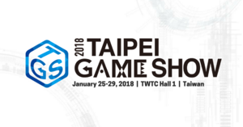

Copyright © Taipei Computer Association
ビジネスソリューションコーナー http://tgs.tca.org.tw
台北コンピュータ協会主催する台北国際ゲームショウ2018（1月25日〜29日）は、台湾最大級「ゲーム」をテーマとした国際展示会です。 業界の繋ぎを強化するため、台北国際ゲームショウはアジア太平洋ゲームサミット、B2Bゾーン、B2Cゾーンが含まれています。 来場者は40万回の来場回数と2,000人のバイヤーが参加します。ブランドの宣伝とマーケティングを行ない、新しいビジネスチャンスを作る最適な場所です。